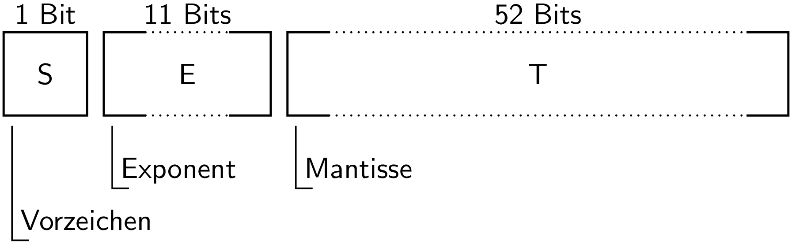

64-Bit-Gleitkommazahlen nach IEEE-Standard 754¶
In diesem Anhang soll kurz die Binärdarstellung von 64-Bit-Gleitkommazahlen nach dem Standard IEEE Std 754–2008 [1] vorgestellt werden. Dabei handelt es sich nur um einen sehr kleinen Ausschnitt dieses Standards, der noch weitere Gleitkommazahlenformate sowie deren arithmetische Verarbeitung definiert.
Wie in der folgenden Abbildung zu sehen ist, besteht eine 64-Bit-Gleitkommazahl aus drei Anteilen: 1 Bit für das Vorzeichen, 11 Bits aus denen der Exponent bestimmt wird, sowie 52 Bits aus denen sich die Mantisse ergibt. Im zweiten und dritten Segment steht das höchstwertigste Bit (MSB – most significant bit) jeweils links und das niederwertigste Bit (LSB – least significant bit) rechts.
{kind=link}

Die Interpretation der 64 Bits hängt vom Wert des Exponenten E ab, der als Integer zu verstehen ist und damit Werte zwischen 0 und 211-1 annehmen kann.
Wir beginnen mit dem häufigsten Fall, dass E ungleich 0 und ungleich 211-1 ist, also einen Wert zwischen 1 und 211-2 besitzt. In diesem Fall liegt eine so genannte normalisierte Zahl vor, für die die 64 Bits in folgender Weise zu interpretieren sind. Ist das Vorzeichenbit gleich 0, so handelt es sich um eine positive Zahl, andernfalls um eine negative Zahl. Um den tatsächlichen Exponenten zu erhalten, muss man von E den Wert 210-1=1023 abziehen. Damit resultiert im Binärsystem ein Faktor, der zwischen 2-1022 und 21023 liegt. Die Mantisse ist als Nachkommaanteil im Binärsystem zu interpretieren, wobei implizit eine führende 1 vor dem Komma steht.
Ein Beispiel soll diese Kodierung verdeutlichen. Gegeben sei die
64-Bit-Darstellung C039A40000000000, deren führende Bits
1|10000000011|100110100100... lauten. Die senkrechten Striche verdeutlichen
dabei die Einteilung in die drei Bereiche S, E und T. Das erste Bit gibt an,
dass es sich um eine negative Zahl handelt. Die folgenden 11 Bit ergeben 210+21+20 = 1027. Subtrahiert man 1023, so ergibt
sich für die kodierte Zahl ein Faktor 24. Die restlichen Bits
ergeben die Mantisse mit dem Wert 2-1+2-4+2-5+2-7+2-10 = 0,6025390625. Berücksichtigt man die führende
implizite Eins bei normalisierten Zahlen, so ergibt sich insgesamt -24×1,6025390625 = -25,640625.
Falls der Exponent E seinen Maximalwert, für 64-Bit-Gleitkommazahlen also 2047, annimmt, hängt die Interpretation vom Mantissenfeld ab. Enthält dieses den Wert Null, so ist die Zahl unter Berücksichtigung des Vorzeichenbits als +∞ oder -∞ zu interpretieren. Ist das Mantissenfeld dagegen ungleich Null, so ergibt sich der Wert NaN (Not a Number).
Hat der Exponent E seinen Minimalwert Null und ist zugleich die Mantisse T gleich Null, so liegt je nach Wert des Vorzeichenbits die Zahl 0 oder -0 vor. Ist dagegen die Mantisse T von Null verschieden, so hat man es mit einer so genannten denormalisierten Zahl zu tun. Denormalisierte Zahlen wurden eingeführt, weil der Minimalwert einer normalisierten 64-Bit-Gleitkommazahl betragsmäßig gleich \(2^{-1022}\approx 2,225\cdot 10^{-308}\) ist. Zwischen dieser Zahl und Null existiert somit eine Lücke, die man im Rahmen der Möglichkeiten einer 64-Bit-Gleitkommazahl zu füllen versucht. Im Gegensatz zu normalisierten Zahlen, bei denen eine implizite Eins vor den Nachkommaanteil zu setzen war, steht bei denormalisierten Zahlen vor dem Komma eine Null. Da damit der sich aus dem Mantissenfeld ergebende Faktor kleiner als Eins ist, eröffnet sich die Möglichkeit Zahlen darzustellen, die kleiner als die kleinst mögliche normalisierte Zahl ist. Allerdings geht dies auf Kosten der Anzahl signifikanter Ziffern, die bei denormalisierten Zahlen kleiner ist als bei normalisierten Zahlen. Damit die denormalisierten Zahlen nahtlos an die normalisierten Zahlen anschließen, ist der sich normalerweise aus dem Exponentenfeld ergebende Faktor gleich dem kleinsten Faktor für normalisierte Zahlen, also 21-1023 = 2-1022.
Wir charakterisieren abschließend die 64-Bit-Gleitkommazahlen durch einige ihrer Eigenschaften. Die kleinste darstellbare Zahl größer als Null ist \(2^{-1022}\times 2^{-52} = 2^{-1074} \approx 4,941\cdot 10^{-324}\). Die größte darstellbare endliche Zahl ist \(2^{1023}\times(1+(1-2^{-52})) \approx 1,798\cdot 10^{308}\). Der Abstand zwischen der Zahl Eins und der nächst größeren darstellbaren Zahl beträgt \(2^{-52} \approx 2,22\cdot 10^{-16}\). Die letzten beiden Angaben lassen sich in Python folgendermaßen verifizieren:
>>> import sys
>>> sys.float_info.max
1.7976931348623157e+308
>>> sys.float_info.epsilon
2.220446049250313e-16
Mit sys.float_info.min erhält man nicht die kleinste überhaupt darstellbare Zahl,
sondern die kleinste darstellbare normalisierte Zahl 2-1022.